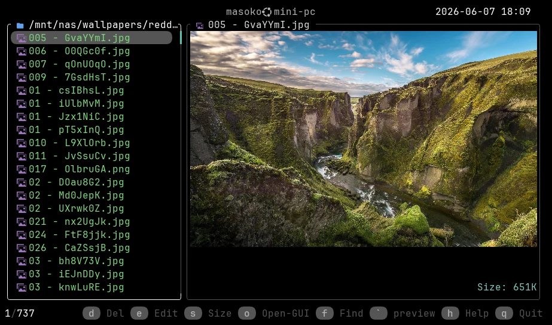
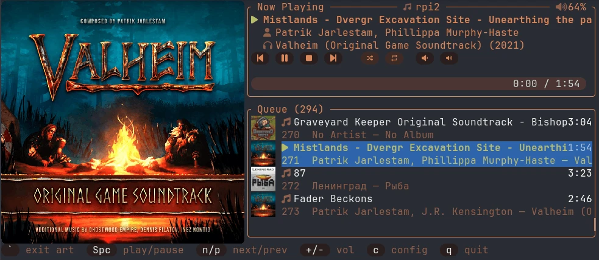
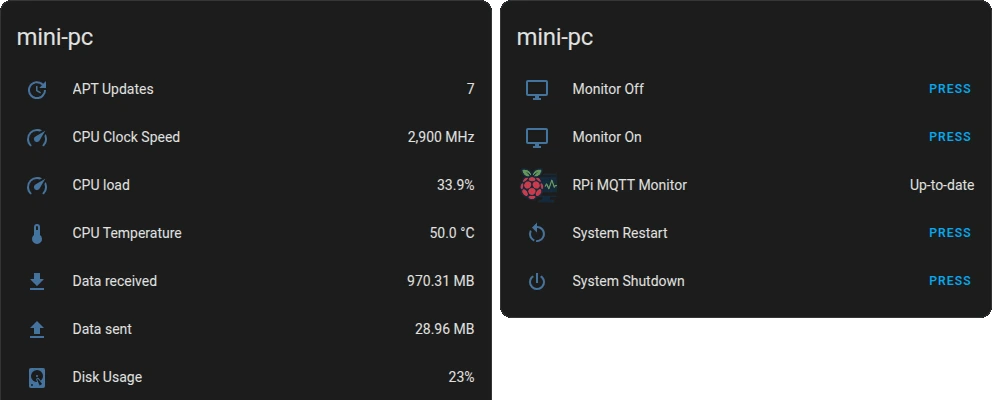
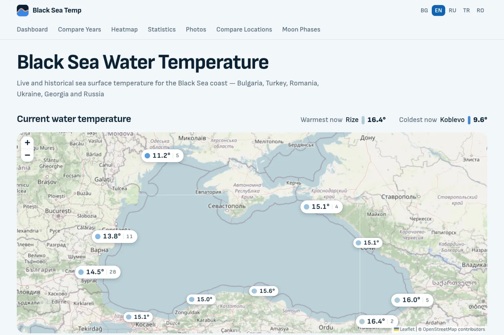
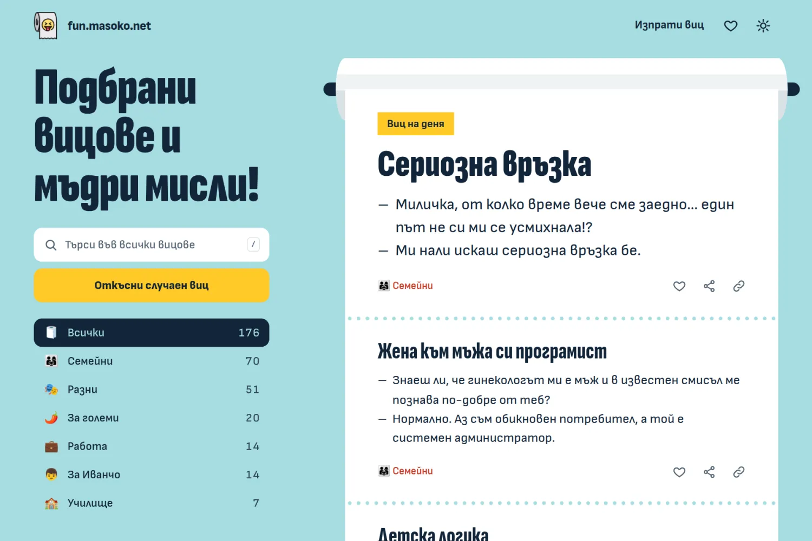
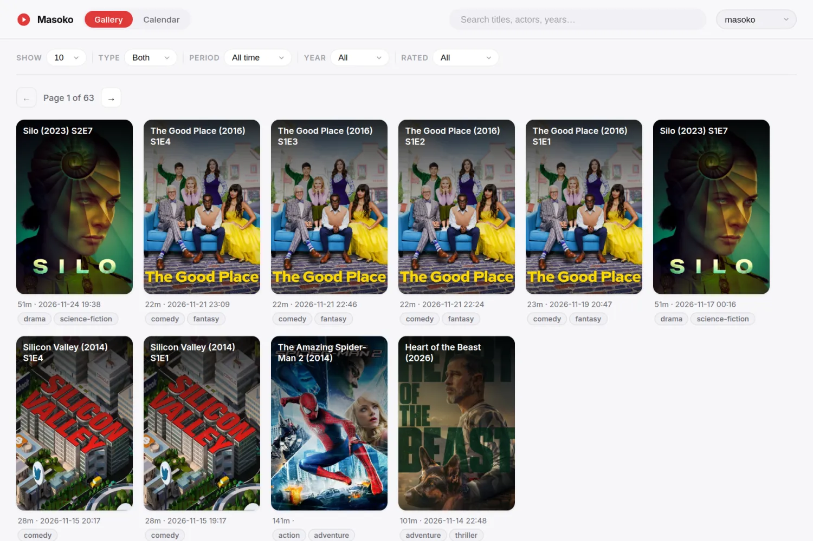
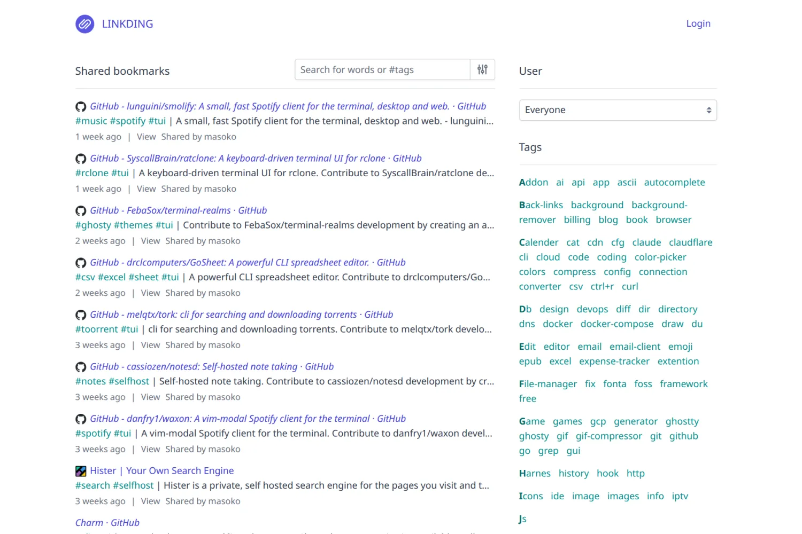
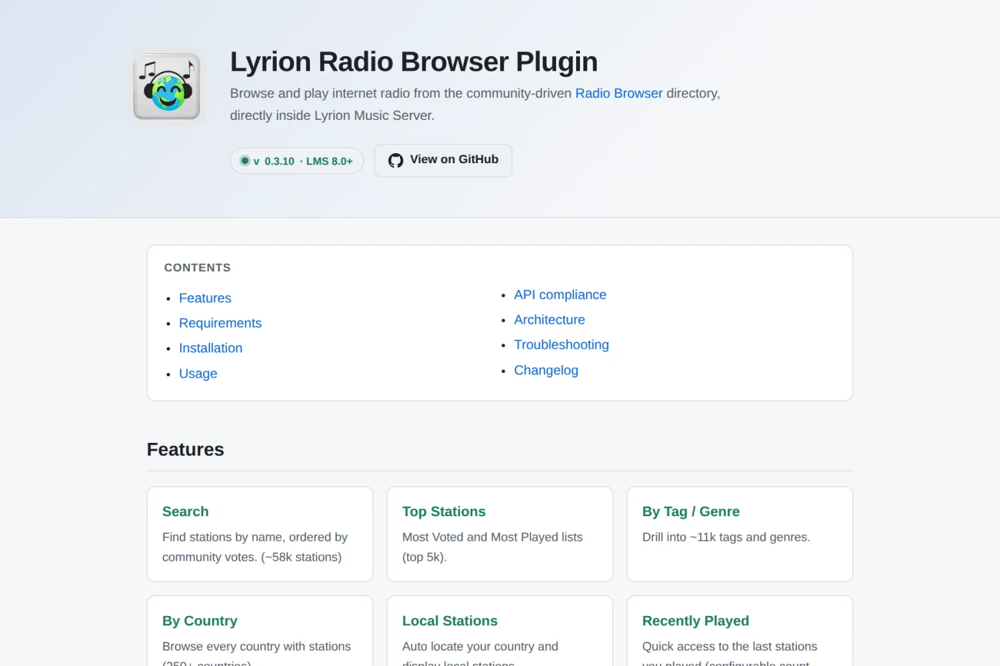
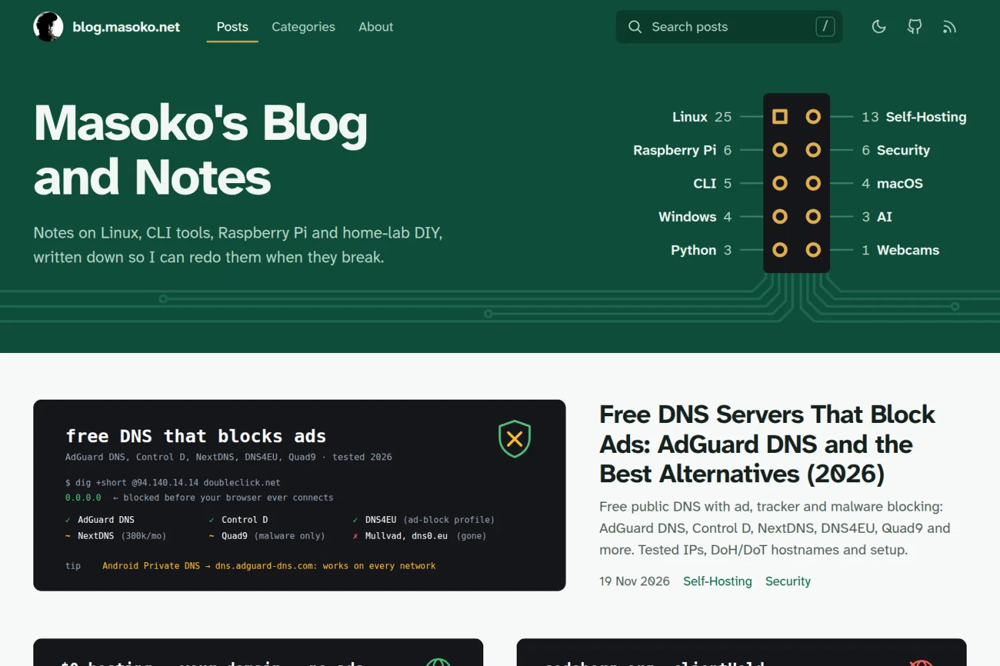
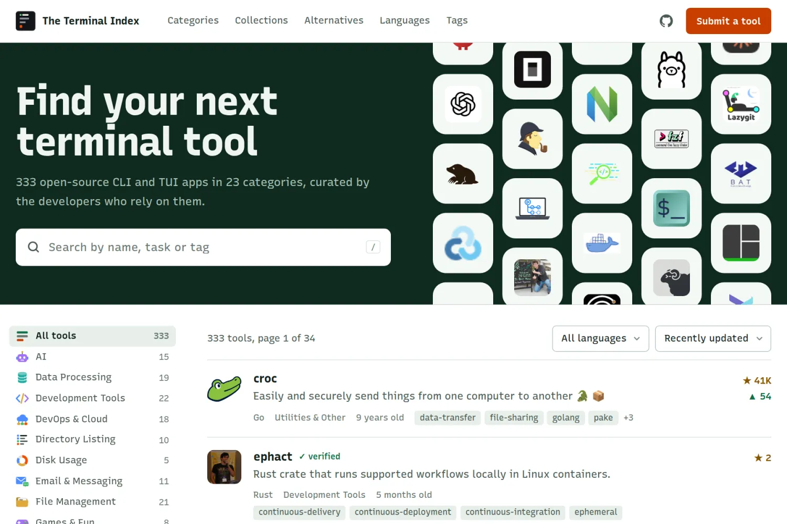

Featured projects
-
Shell BuddyRust
A fast, single-binary file manager for the terminal, with previews, archives, search, remote mounts and Git workflows.
sb.masoko.net Source on GitHub

-
LyrtuiRust
A keyboard and mouse driven terminal player for Lyrion Music Server. Browse your library, radio and streaming apps with inline album art and colors that adapt to it.
masoko.net/lyrtui Source on GitHub

-
RPi MQTT MonitorPython
The easiest way to track and control the health and performance of a Raspberry Pi or Ubuntu system in Home Assistant, over MQTT.
masoko.net/rpi-mqtt-monitor Source on GitHub

Side projects
-
Black Sea Water TemperatureHTML, JavaScript
Live and historical Black Sea water temperatures from Bulgaria’s National Institute of Meteorology, with seasonal trends.
more.masoko.net Source on GitHub

-
fun.masoko.netPelican
A collection of Bulgarian jokes I like, with a JSON API for random jokes.
fun.masoko.net Source on GitHub

-
trakt.masoko.netPython, Flask
My watch history from the Trakt API, with stats and charts on viewing habits across movies and TV shows.
trakt.masoko.net Source on GitHub

-
links.masoko.netLinkding
My public bookmarks: articles, projects, tools and resources I want to revisit.

-
BG Live TV for StremioNode.js
A self-hosted Stremio addon with 65+ Bulgarian live TV channels, including bTV, BNT, Nova and Eurosport. Fresh HLS streams and a zero-config Docker setup.
masoko.net/bgtv-stremio Source on GitHub

-
Lyrion Radio BrowserPerl
A Lyrion Music Server plugin for the community-driven Radio Browser directory. Find and stream internet radio by popularity, genre or country.
masoko.net/lyr-radio-browser Source on GitHub

-
blog.masoko.netJekyll
Tech blog and notes since 2018: Linux administration, Raspberry Pi projects, Python, networking, home automation and multi-room audio.
blog.masoko.net Source on GitHub

-
The Terminal IndexAstro
A searchable, community-submitted directory of command-line tools. Browse by category, language and tag, with user ratings.
cli.masoko.net Source on GitHub
